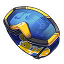
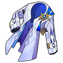

추천 광추
기억 속 모습
격특 +56% · 공격 후 에너지 +8pt
효과 자세히
에너지 회복 턴당 1회.
맞물린 톱니
공격 또는 피격 → 에너지 +8pt
효과 자세히
턴마다 1회.
아직 전투는 끝나지 않았다
회복효율 +10% · SP 반환
효과 자세히
아군 대상 필살기 2회마다 SP +1. 스킬 후 다음 아군 피해 +30% 1턴.
행성과의 만남
같은 속성 피해 +24%
효과 자세히
장착자와 같은 속성 피해를 주는 아군에게 적용.
추천 유물
가상공간을 누비는 메신저 2 + 고행의 길에 다시 오른 사제 2 · 바다에 잠긴 루샤카 2
- 머리

주옵션HP부옵션속도 · HP% · 방어력% · 효과 저항 · 치명타 확률 · 치명타 피해 - 손
 주옵션공격력부옵션속도 · HP% · 방어력% · 효과 저항 · 치명타 확률 · 치명타 피해
주옵션공격력부옵션속도 · HP% · 방어력% · 효과 저항 · 치명타 확률 · 치명타 피해 - 몸통

주옵션치명타 확률 / 치명타 피해 / HP%부옵션속도 · HP% (주옵션 제외) · 방어력% · 효과 저항 · 치명타 확률 (주옵션 제외) · 치명타 피해 (주옵션 제외) - 다리
 주옵션속도부옵션HP% · 방어력% · 효과 저항 · 치명타 확률 · 치명타 피해
주옵션속도부옵션HP% · 방어력% · 효과 저항 · 치명타 확률 · 치명타 피해 - 구체
 주옵션허수 속성 피해 / HP%부옵션속도 · HP% (주옵션 제외) · 방어력% · 효과 저항 · 치명타 확률 · 치명타 피해
주옵션허수 속성 피해 / HP%부옵션속도 · HP% (주옵션 제외) · 방어력% · 효과 저항 · 치명타 확률 · 치명타 피해 - 매듭
 주옵션에너지 회복효율부옵션속도 · HP% · 방어력% · 효과 저항 · 치명타 확률 · 치명타 피해
주옵션에너지 회복효율부옵션속도 · HP% · 방어력% · 효과 저항 · 치명타 확률 · 치명타 피해
이 조합을 추천하는 이유
속도 2세트 두 가지 +12%로 조율. 루샤카 회복효율 +5% · 허수 공격력 딜러 1번.
이 정도면 잘 키웠다
선택한 세팅 기준 · —는 확인된 수치 없음
성혼과 추천 돌파
2돌 필살기 회전 보강 · 6돌 필살기로 호령을 즉시 켜서 운용 자유도 증가.
1전투 시작 → 전원 속도 +10%
2턴.
2아군 에너지 최대치 도달 → 어공 에너지 +5pt추천
아군별 1회. 어공 필살기 후 대상별 발동 횟수 초기화.
3전투 스킬 +2 · 일반 공격 +1
스킬·일반 공격 레벨 상한 각각 15·10.
4호령 보유 중 본인 피해 +30%
효시의 울림
5필살기·특성 +2
필살기·특성 레벨 상한 각각 15.
6필살기 즉시 호령 1스택추천
전투 스킬 없이도 필살기의 치명타 버프 발동.
추천 파티


기본 운영과 행적
활시위 호령을 딜러 턴에 맞추기
딜러 바로 앞에서 전투 스킬 → 호령이 있는 동안 필살기 → 뒤따르는 딜러가 공격.
- 다른 아군 턴 종료로 호령 스택 소모. 6돌은 필살기 사용 시 호령 즉시 1스택.
행적 육성 순서
전투 스킬 → 필살기 → 특성·일반 공격
아하 속도 계산기 →기준과 출처 · 2026-11-27
4.7 데이터 · Prydwen 장비 참고 · 자료실 편성 예시